Это независимый SEO-аудит в формате образца работы по публичной версии reestr-719.ru, выполненный 27.09.2026. Первичный обход всех URL из карты сайта дал список кандидатов, а каждая находка затем проверялась вручную в Chrome DevTools и curl или независимым обходом Screaming Frog. Ниже приведены наблюдения на дату аудита и рекомендации. Подтверждений внедрения и измерений после него нет.
Задача
Провести технический аудит публичной версии сайта и отделить подтверждённые проблемы от гипотез и ложных срабатываний. Доступа к CMS, серверу, Яндекс Вебмастеру и Google Search Console не было. Клиентский бриф и целевые бизнес-показатели для этой работы не заявляются.
Методика
Сначала в браузере были обойдены все URL из sitemap_index.xml: загрузка страницы и разбор исходного HTML. Из этих страниц собраны внутренние ссылки, а адреса вне карты сайта проверены отдельно. Вторым проходом для каждой проблемной ссылки определялись страница-источник, анкор и место в шаблоне.
Затем каждая находка перепроверялась вручную: в Chrome DevTools (Elements, Network, Console, Computed), через curl.exe для кодов ответа и цепочек редиректов, а по метатегам и заголовкам - независимым обходом Screaming Frog. Бесплатная версия Screaming Frog ограничена 500 URL, поэтому обход частичный; где числа из двух источников различаются, это указано.
Что проверялось
Карта сайта содержала 8 дочерних sitemap и 603 URL без повторов; все 603 отвечали HTTP 200 без редиректа. В ссылках найдено 785 уникальных внутренних адресов, из них 137 вне карты сайта и вне /wp-content/ проверены отдельно. Платформа определена по публичным признакам: WordPress, Elementor и Yoast SEO Premium.
Ключевые находки
1. Ссылки в статьях вели на 404 и не на те страницы
Первичный обход нашёл в тексте статей 9 ссылок на страницы с ответом 404 на 5 страницах. Битые адреса: /yslygi (5 страниц), /pomoshch-s-vneseniem-produkcii-v-reestr-produkcii-eaes (2), /v-reestr-minpromtorga-rossii-za-2-mesyaca и /pomoshch-s-vklyucheniem-tovarov-v-reestr-radioelektronnoj-produkcii (по 1). На проверенной статье все четыре адреса вручную подтверждены в Console: они возвращают 404.
Два случая уводят пользователя не туда. Ссылка с анкором «ПП 719» ведёт на /pp-719/: WordPress отвечает 301 и перенаправляет на статью «ПП 719 без стресса…», а не на страницу постановления /pp719/. На странице /prorabatyvayutsya-trebovaniya-svyazannye-s-importozameshheniem-v-2026-godu/ ссылка «Предыдущая статья» ведёт на старый адрес, который через 301 от Yoast SEO Premium возвращает на эту же статью.
Это прямой вред пользователю в коммерчески важных статьях: ссылки должны вести на услуги. Рекомендация - заменить /yslygi и старые адреса услуг на актуальные /services/.../, направить «ПП 719» на /pp719/, проверить в CMS запись «Подготовлена новая редакция…» и правило редиректа Yoast. Масштаб указан по первичному обходу 603 URL; вручную 404 подтверждены на одной проверенной статье.
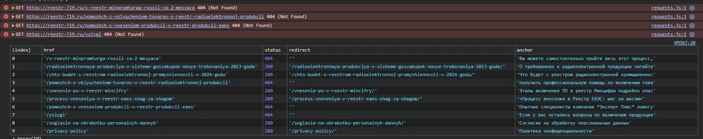
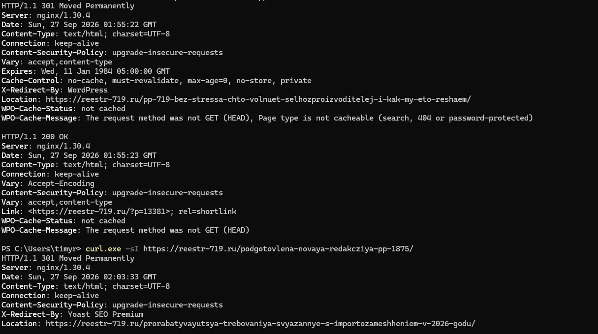
2. Ссылки в офлайн-виджете чата вели на 404
Офлайн-форма виджета Envybox подгружается скриптом, поэтому первичный обход исходного HTML её не видел; находка появилась при ручной проверке формы на странице. В блоке согласия две ссылки - на согласие на обработку данных и на политику - содержат символ «»» вокруг абсолютного адреса.
Из-за этого браузер воспринимает значение как относительный путь: запрос уходит на адрес текущей статьи с добавкой вида %C2%BBhttps://...%C2%BB и получает 404. Клик по обеим ссылкам открывает страницу 404. Пользователь не может открыть из виджета документы, на которые даёт согласие. Рекомендация - исправить адреса в настройках виджета и оставить обычные абсолютные URL со слешем. Юридическая оценка не проводилась.
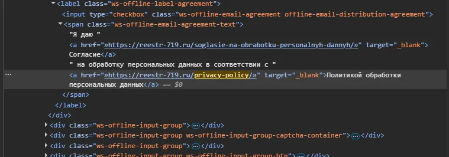
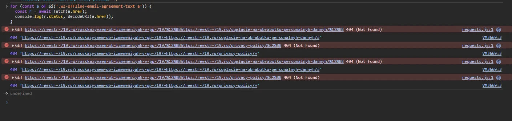
3. Ссылки в форме заявки шли через редирект
В форме Contact Form 7 ссылки на политику конфиденциальности и согласие записаны без завершающего слеша: /privacy-policy и /soglasie-na-obrabotku-personalnyh-dannyh. Обе отвечают 301 и перенаправляют на адреса со слешем; заголовок X-Redirect-By: WordPress показывает, что редирект делает WordPress.
Форма выводится почти на каждой странице: по первичному обходу это 760 вхождений на 378 страницах, из 881 найденного вхождения внутренних ссылок через редирект. Пользователь попадает на нужную страницу, поэтому приоритет средний, но каждый обход тратит лишний запрос. Исправляется одной правкой шаблона формы. Полная сверка Inlinks в Screaming Frog не выполнялась из-за лимита 500 URL.
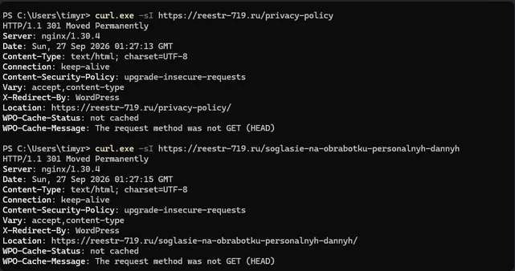
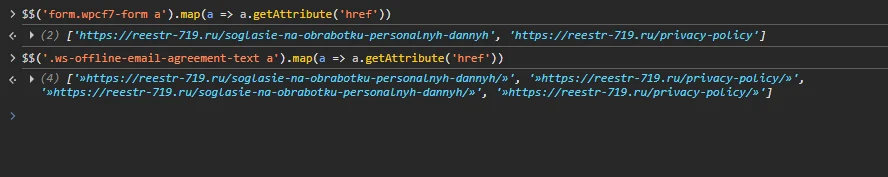
4. Шрифты подключались с технического домена хостинга
Адрес технического домена ce61589-wordpress-9o7mg.tw1.ru найден в HTML всех 603 страниц первичного обхода. На главной с него подключаются 39 правил @font-face: Montserrat, Montserrat-Black, Baron Neue и Baron Neue Black. По http этот домен показывает заглушку хостинга.
В Network на главной 9 запросов шрифтов завершаются ошибкой net::ERR_CERT_COMMON_NAME_INVALID с размером 0 kB. На кнопке «ГИСП - система госзаказа» в стилях задан Montserrat-Black, но Rendered Fonts показывает системный Arial: браузер подставил запасной шрифт. Контент читается, но дизайн отображается не теми шрифтами, а краулер, который смотрит только HTML, этого не видит. Рекомендация - перенести файлы шрифтов на основной домен и заменить адреса в настройках плагина шрифтов и CSS Elementor.
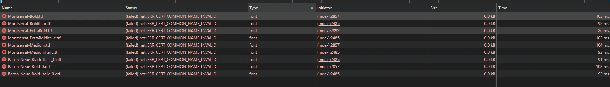
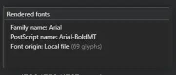
5. Пропуски и дубли Description
По первичному обходу Description нет на 100 из 603 URL, больше всего - у вопросов и рубрик FAQ, рубрик блога и отзывов. Screaming Frog при лимите 500 URL проанализировал 328 HTML-страниц и нашёл 26 без Description; на 278 URL, общих для двух обходов, пропуски совпали полностью - 26 из 26. Остальные пропуски первичного обхода находятся на страницах, до которых Screaming Frog не дошёл.
Дубли среди индексируемых страниц по Screaming Frog - 20 URL в 4 группах. Крупнейшая - 14 статей на разные темы с одним описанием о премии «Молодой промышленник года». Такое описание на статье про субсидии не соответствует содержанию и может попасть в сниппет, поэтому эта группа - средний приоритет, а пропуски в FAQ и таксономиях - низкий. Рекомендация - переписать 14 описаний и задать шаблон в Yoast для рубрик и вопросов.
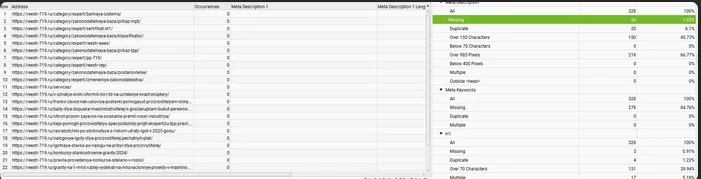
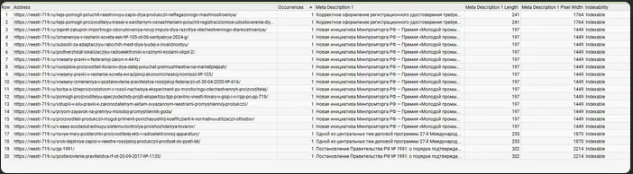
6. Два H1 на страницах услуг, один скрыт
Screaming Frog нашёл 17 URL с несколькими H1: 16 страниц /services/... и страница отзывов. На 3 страницах услуг тексты двух H1 совпадают, на 13 - различаются. Ещё 3 страницы, включая /about-us/, не имеют H1.
На /services/zapolnenie-kataloga-v-gisp/ вручную подтверждено: первый H1 «Заполнение каталога товаров в ГИСП за 3 дня» скрыт через div.hide-header с display: none, второй - видимый заголовок Elementor. Поисковик видит в HTML оба заголовка, пользователь - только один. Скрытость проверена на одной странице, для остальных это вывод по выгрузке и шаблону. Рекомендация - отключить заголовок темы в шаблоне услуг или сделать его не H1 и добавить H1 на три страницы. Главная не затронута: там один видимый H1.
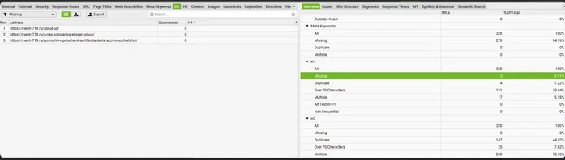
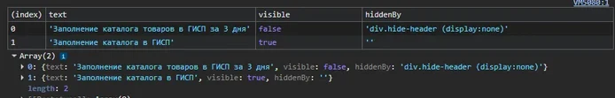
7. Несуществующая страница пагинации отвечала 200
Раздел «Помощь эксперта» имеет страницы пагинации до /page/45/. Заведомо несуществующий номер /pomoshch-eksperta/page/99/ отвечает HTTP 200 и открывается как обычная страница раздела с пустой основной областью. Для сравнения /category/expert/page/999/ корректно отвечает 404.
Это поведение, похожее на soft 404: оно создаёт лишнее пространство URL для обхода. Приоритет низкий, потому что страницы пагинации закрыты noindex, а внутренних ссылок на несуществующие номера не найдено. Рекомендация - отдавать 404 за пределами списка и привести canonical пагинации к схеме, которая используется в рубриках.
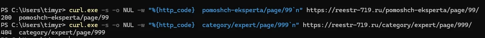
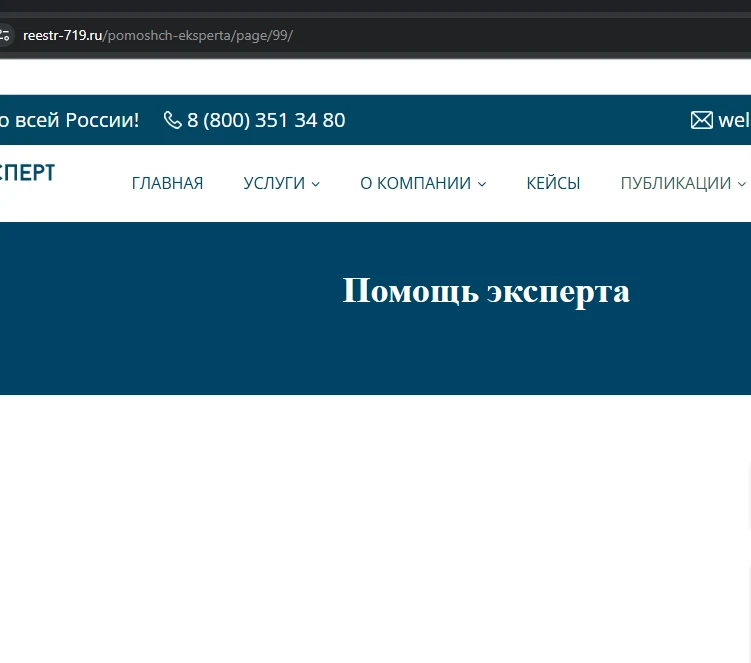
Что дополнительно проверялось
Контрольные проверки, которые не стали находками.
Карта сайта, индексируемость и canonical
Все 603 URL из карты сайта отвечают 200 без редиректа, имеют index, follow и ровно один canonical на самих себя. На 19 URL canonical отличался только записью знака «№» (закодирован в карте сайта, символом в canonical) - это один и тот же адрес.
Длинные Title
600 из 603 Title длиннее 70 символов, но основная причина - общий суффикс Yoast длиной около 58 символов. Это вопрос шаблона, а не 600 отдельных ошибок.
Зеркала и служебные ответы
Вариант http://www.reestr-719.ru/services приходит на https://reestr-719.ru/services/ за два редиректа 301. Несуществующий URL отвечает 404 с noindex, адрес в верхнем регистре имеет canonical на нижний, поиск закрыт noindex. Цепочку зеркал можно сократить до одного шага, но это оптимизация, а не ошибка.
Приоритеты
High Ломают путь пользователя
- Ссылки на 404 и ссылка «ПП 719» в статьях
- Ссылки на согласие и политику в офлайн-виджете чата
Medium Лишние запросы и неверные сигналы
- Ссылки через редирект в форме и в тексте статей
- Шрифты с технического домена хостинга
- 14 статей с одинаковым Description
Low Порядок в шаблонах
- Пропуски Description в FAQ и таксономиях
- Два H1 на страницах услуг
- Пустая пагинация с ответом 200
Это группировка исправлений внутри аудита, а не прогноз бизнес-эффекта.
Рекомендации
- Исправить ссылки в статьях. Заменить битые и устаревшие адреса на актуальные страницы услуг, направить «ПП 719» на
/pp719/, убрать «Предыдущую статью», которая возвращает на текущую страницу. - Починить офлайн-виджет чата. Убрать лишние символы «»» из адресов согласия и политики.
- Поправить шаблон формы. Записать финальные адреса со слешем, чтобы убрать 760 вхождений ссылок через редирект.
- Перенести шрифты на основной домен. Заменить адреса tw1.ru в плагине шрифтов и CSS Elementor.
- Навести порядок в Description. Переписать 14 одинаковых описаний, задать шаблон для FAQ и рубрик.
- Оставить один H1. Убрать заголовок темы на страницах услуг и добавить H1 на три страницы без него.
- Отдавать 404 для пустой пагинации. Несуществующие номера страниц не должны отвечать 200.
Это рекомендации по результатам аудита, а не перечень внедрённых изменений.
Ограничения
Аудит проводился 27.09.2026 по публичной версии сайта без доступа к CMS, серверу, Яндекс Вебмастеру и Google Search Console. Screaming Frog использовался в бесплатной версии с лимитом 500 URL, поэтому часть масштабов указана по первичному обходу 603 URL. Ручные проверки выполнялись на отдельных страницах и не переносятся автоматически на весь сайт. Скорость загрузки, Core Web Vitals, реальная индексация и редакционные ошибки в текстах не проверялись.
Статус работы
Статус: Образец работы. Аудит и рекомендации подготовлены. Внедрение рекомендаций и результаты после него не подтверждены, поэтому здесь нет заявлений о росте трафика, позиций, продаж, конверсий или иных неподтверждённых результатах.